2010/11/28 ワイパープレッシャーコントロールユニットの交換
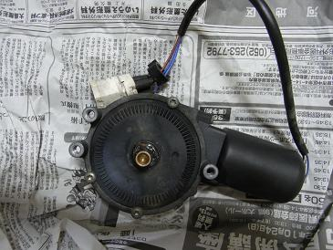 部品取り車から外したユニット この機能を殺してしまおうかとも思ったが、これがないと「ぬゆわ」辺りからワイパーの拭きが悪くなる。
|
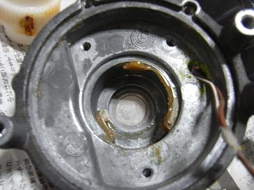 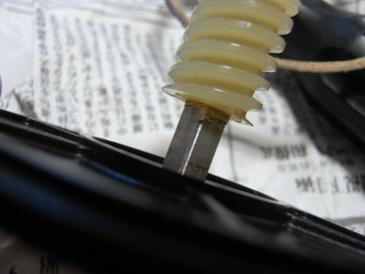 ドナーの535iは、部品取り車なのに屋根のある場所に保管されている。（現役のＭゴロー号は青空駐車場なのに・・・） そのおかげか、部品の状態は良い。
|
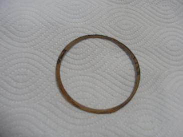 分解、清掃、グリスアップを行い、組むときに問題となるのがこのガスケット。 紙ガスケットなのだが、型がついてガスケットの役目を果たしていない。 assy交換に至ったのも、前回分解した時にこのガスケットが役目を果たしておらず、隙間から水が入り、錆が出て動きが渋くなったのだ。
|
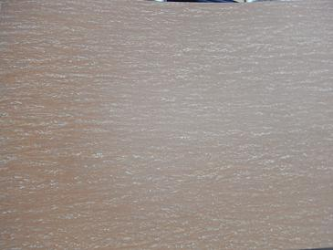 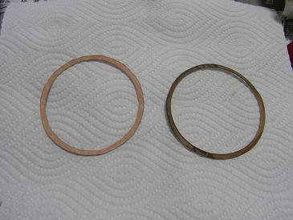 当然、このガスケットだけ部品で出てくるわけがない。 そこで、厚さ0.3mmのガスケット紙を用意し作り直すことにした。 ガスケット紙に◎を書いて切り抜くだけだ。 ガスケット紙はホームセンターで手に入る。
|
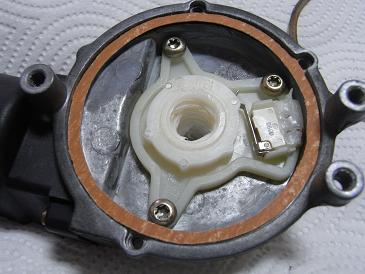 切り抜いたガスケット紙を合わせてみたところ。 ここで、グリスアップ時の注意点を１つ。 上の写真、真ん中にあるギアにはたっぷりとグリスを塗らないこと。 たっぷり塗ってしまうと逆に動きが渋くなる。 薄く塗布されているぐらいがちょうど良い。
|
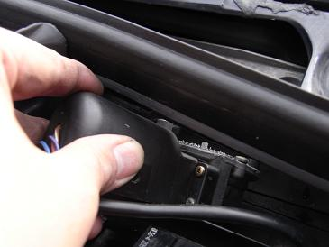 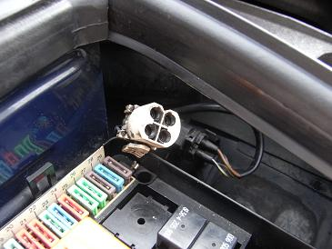 いつも悩むモーターの取り出し。 いろいろな角度から考えてみると、取り出すコツがわかった。 モーター後ろ側から、左上のような角度で取り出すと比較的簡単に取り出せる。 取り付ける時も、同じくこの角度で入れていく。 あとは、脆くなったカプラーを割らないように取り外せば摘出完了だ。
|
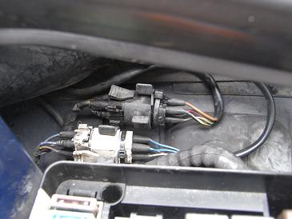 モーターを取り付け、配線を綺麗に処理して、ワイパーアームなどを元に戻して完成。 当然だが交換後はとてもスムースなモーター音になった。 雨の高速も走ってみたが、アームが浮くこともなく機能を果たしているようだ。 残りのガスケットでリアアッパーマウントとスロットルのガスケットも作ってみようと思う。
|
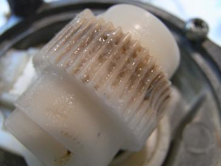 異音が出ていたユニットを分解すると。。。 中に水が溜まっていました(--;) 水の浸入で本体が錆び、、このギアがロックしてしまい、、歯が削れモーターが空転していたようだ。 こりゃ異音も出るだろう。
|